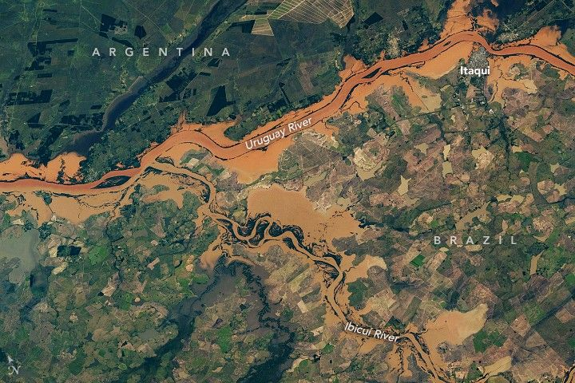

Flooding Along the Uruguay and Ibicuí Rivers
On June 18, 2025, torrential rains hit the state of Rio Grande do Sul in southern Brazil. Reports indicate that the abundance of rain—more than 350 millimeters (14 inches) in places—caused flash flooding, landslides, and the evacuation of thousands of people.
Almost a week later, an astronaut aboard the International Space Station photographed the still-swollen Uruguay and Ibicuí rivers. The image above is a mosaic of several of those photos, acquired on June 24, 2025. (Click on the image to see the full mosaic.)
The image shows flooding along the confluence of the two rivers, located in the western part of the Brazilian state. (Argentina can be seen to the north of the Uruguay River.) Part of Itaqui, a municipality along the bank of the Uruguay River, lies within the river’s floodplain. Using data from the Shuttle Radar Topography Mission, researchers previously showed that flood-related hazards are greatest along the outskirts of neighborhoods in the northern and western parts of Itaqui’s urban area.
The floods damaged more than 130 municipalities across the state, according to an International Organization for Migration report. Jaguari, a municipality about 190 kilometers (120 miles) east of Itaqui, was especially hard hit and declared a state of public calamity. More than 20 others issued a state of emergency.
Just over a year had passed since the region experienced another episode of widespread, destructive flooding. The 2024 floods inundated parts of Porto Alegre, the state’s capital city, and left parts of the state submerged for over a month.